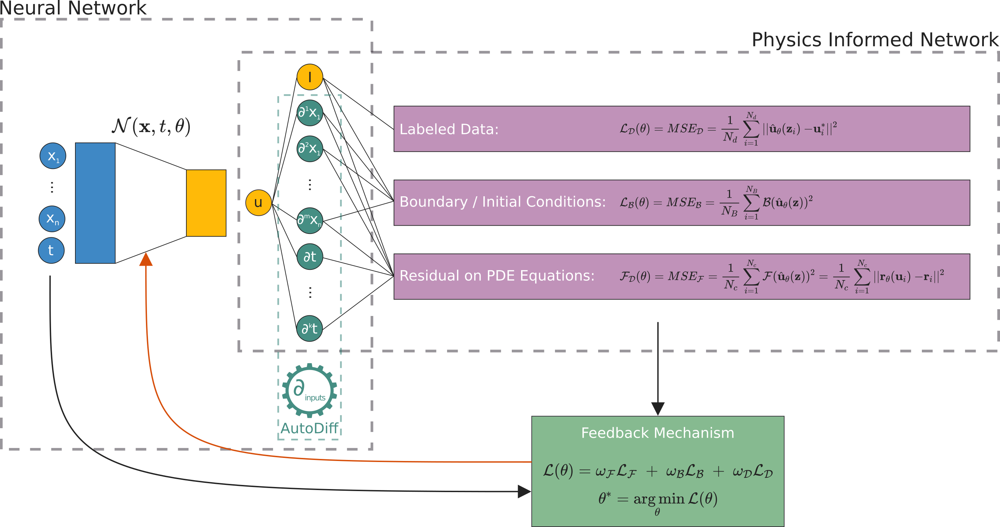
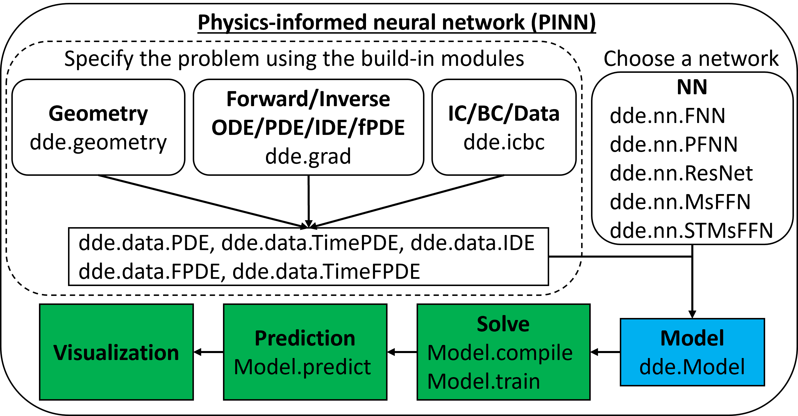

Physics-Informed Neural Networks#
Motivation#
For years mathematicians and physicists are trying to model the world with differential equations. However, since the advent of techniques such as machine learning, neural networks and deep learning together with greater computing power, community has speculated that we could learn automatically (algorithms) anything with a enough amount of data. However, it seems this is not really true.
Philosophical Question: Could have a machine discovered Newton’s laws?
PINNs#
In 2019, Raissi, Perdikaris and Karniadakis introduced Physics-Informed Neural Networks (PINNs), neural networks that are trained to solve supervised learning tasks while respecting any given law of physics described by general nonlinear partial differential equations (source). PINNs are nowadays used to solve PDEs, fractional equations, and integral-differential equations.
Idea
PINNs approximate PDE solutions by training a neural network to minimize a loss function, including:
Initial and boundary conditions along the space-time domain’s boundary
PDE residual at selected points in the domain.
If you want to do a simplified analogy, initial and boundary conditions points will be an usual training dataset, but also it is necessary to embed physical laws (PDE) into the neural network.
Setup#
PINNs can solve differential equations expressed, in the most general form, like:
defined on the domain \(\Omega \subset \mathbb{R}^d\) with the boundary \(\partial \Omega\). Where
\(z := (x_1, x_2, \ldots, t)^\top\) indicated the space-time coordinate vector,
\(u\) the unknown function,
\(\lambda\) the parameters related to the physics,
\(\mathcal{F}\) the non-linear differential operator,
\(f\) the function identifying the data of the problem,
\(\mathcal{B}\) the operator indicating arbitrary initial or boundary conditions, and
\(g\) the boundary function.
In the PINN methodology, \(u(z)\) is computationally predicted by a NN, parametrized by a set of parameters \(\theta\), giving rise to an approximation $\( \hat{u}_\theta(z) \approx u(z) \)$
The optimization problem we want to deal with it is
this is three weighted loss functions, each one depending on
\(\mathcal{L}_\mathcal{F}\), differential equation,
\(\mathcal{L}_\mathcal{B}\), boundary conditions, and
\(\mathcal{L}_{\text{data}}\), (eventually) some known data.

Implementation: DeepXDE#
DeepXDE is a library for scientific machine learning and physics-informed learning. It support several tensor libraries as backend (TensorFlow, PyTorch, JAX, among other).
One of its main features is that enables the user code to be compact, resembling closely the mathematical formulation. We don’t have to worry much about the technical aspect of the code, but rather about the mathematical model.

Example: Burguers Equation#
We will solve a Burquers equation
with the Dirichlet boundary conditions and initial conditions $\( u(-1,t)=u(1,t)=0, \quad u(x,0) = - \sin(\pi x). \)$
Official documentation tutorial here.
Remarks:
If you are working on Google Colab you need to install
DeepXDEand enable GPU.!pip install deepxdeGo to Menu
Menu > Runtime > Change Runtimeand change hardware accelaration to GPU.
If you are working on your own machine, please follow the install and setup documentation.
# Uncomment and run the next line if you are working on Google Colab
# !pip install deepxde
import numpy as np
import deepxde as dde
from deepxde.backend import tf
No backend selected.
Finding available backend...
2023-06-05 03:29:12.112854: I tensorflow/tsl/cuda/cudart_stub.cc:28] Could not find cuda drivers on your machine, GPU will not be used.
2023-06-05 03:29:12.163822: I tensorflow/tsl/cuda/cudart_stub.cc:28] Could not find cuda drivers on your machine, GPU will not be used.
2023-06-05 03:29:12.165043: I tensorflow/core/platform/cpu_feature_guard.cc:182] This TensorFlow binary is optimized to use available CPU instructions in performance-critical operations.
To enable the following instructions: AVX2 AVX512F FMA, in other operations, rebuild TensorFlow with the appropriate compiler flags.
2023-06-05 03:29:13.132098: W tensorflow/compiler/tf2tensorrt/utils/py_utils.cc:38] TF-TRT Warning: Could not find TensorRT
Using backend: tensorflow.compat.v1
Other supported backends: tensorflow, pytorch, jax, paddle.
paddle supports more examples now and is recommended.
Found tensorflow.compat.v1
Setting the default backend to "tensorflow.compat.v1". You can change it in the ~/.deepxde/config.json file or export the DDE_BACKEND environment variable. Valid options are: tensorflow.compat.v1, tensorflow, pytorch, jax, paddle (all lowercase)
WARNING:tensorflow:From /opt/hostedtoolcache/Python/3.8.16/x64/lib/python3.8/site-packages/tensorflow/python/compat/v2_compat.py:107: disable_resource_variables (from tensorflow.python.ops.variable_scope) is deprecated and will be removed in a future version.
Instructions for updating:
non-resource variables are not supported in the long term
WARNING:tensorflow:From /opt/hostedtoolcache/Python/3.8.16/x64/lib/python3.8/site-packages/deepxde/nn/initializers.py:118: The name tf.keras.initializers.he_normal is deprecated. Please use tf.compat.v1.keras.initializers.he_normal instead.
First of all, we need to define the domain when we will work on
geom = dde.geometry.Interval(-1, 1)
timedomain = dde.geometry.TimeDomain(0, 0.99)
geomtime = dde.geometry.GeometryXTime(geom, timedomain)
The PDE residual is
Then we express the PDE residual in a function.
def pde(x, y):
dy_x = dde.grad.jacobian(y, x, i=0, j=0)
dy_t = dde.grad.jacobian(y, x, i=0, j=1)
dy_xx = dde.grad.hessian(y, x, i=0, j=0)
return dy_t + y * dy_x - 0.01 / np.pi * dy_xx
The first argument to pde is 2-dimensional vector where the first component(x[:,0]) is :math:x-coordinate and the second componenet (x[:,1]) is the :math:t-coordinate. The second argument is the network output, i.e., the solution :math:u(x,t), but here we use y as the name of the variable.
Now, let’s continue with initial and boundary conditions
bc = dde.icbc.DirichletBC(
geomtime,
lambda x: 0,
lambda _,
on_boundary: on_boundary
)
ic = dde.icbc.IC(
geomtime,
lambda x: -np.sin(np.pi * x[:, 0:1]),
lambda _,
on_initial: on_initial
)
Finally, we can define our PDE in a TimePDE object
data = dde.data.TimePDE(
geomtime,
pde,
[bc, ic],
num_domain=2540,
num_boundary=80,
num_initial=160
)
Where
num_domainis the number of training residual points sampled inside the domain,num_boundaryis the number of training points sampled on the boundary, andnum_initialis the number of residual points for the initial conditions.
Just at this point we can we choose the network. Here, we use a fully connected neural network of depth 4 (i.e., 3 hidden layers) and width 20, hyperbolic tangent as activation function and a standar way to initialize the NN called Glorot normal.
net = dde.nn.FNN([2] + [20] * 3 + [1], "tanh", "Glorot normal")
Notice it has two neurons in the input layer, corresponding to time and 1-Dimensional space. However the output layer is just one neuron since \(u(t,x) \in \mathbb{R}\).
Now we need to create an object with our PDE and NN. Also it is necessary to indicate the optimizer we will use.
model = dde.Model(data, net)
model.compile("adam", lr=1e-3)
Compiling model...
Building feed-forward neural network...
'build' took 0.047117 s
/opt/hostedtoolcache/Python/3.8.16/x64/lib/python3.8/site-packages/deepxde/nn/tensorflow_compat_v1/fnn.py:116: UserWarning: `tf.layers.dense` is deprecated and will be removed in a future version. Please use `tf.keras.layers.Dense` instead.
return tf.layers.dense(
'compile' took 0.377277 s
We then train the model for 15000 iterations:
losshistory, train_state = model.train(iterations=15000)
Training model...
Step Train loss Test loss Test metric
0 [6.55e-01, 1.87e-01, 5.50e-01] [6.55e-01, 1.87e-01, 5.50e-01] []
2023-06-05 03:29:16.271871: I tensorflow/compiler/mlir/mlir_graph_optimization_pass.cc:353] MLIR V1 optimization pass is not enabled
1000 [4.64e-02, 2.85e-03, 6.84e-02] [4.64e-02, 2.85e-03, 6.84e-02] []
2000 [3.60e-02, 5.00e-04, 5.31e-02] [3.60e-02, 5.00e-04, 5.31e-02] []
3000 [3.04e-02, 1.40e-04, 4.54e-02] [3.04e-02, 1.40e-04, 4.54e-02] []
4000 [2.03e-02, 8.63e-05, 2.73e-02] [2.03e-02, 8.63e-05, 2.73e-02] []
5000 [6.31e-03, 2.34e-05, 7.58e-03] [6.31e-03, 2.34e-05, 7.58e-03] []
6000 [3.87e-03, 1.04e-05, 3.68e-03] [3.87e-03, 1.04e-05, 3.68e-03] []
7000 [2.49e-03, 9.13e-06, 2.06e-03] [2.49e-03, 9.13e-06, 2.06e-03] []
---------------------------------------------------------------------------
KeyboardInterrupt Traceback (most recent call last)
Cell In[9], line 1
----> 1 losshistory, train_state = model.train(iterations=15000)
File /opt/hostedtoolcache/Python/3.8.16/x64/lib/python3.8/site-packages/deepxde/utils/internal.py:22, in timing.<locals>.wrapper(*args, **kwargs)
19 @wraps(f)
20 def wrapper(*args, **kwargs):
21 ts = timeit.default_timer()
---> 22 result = f(*args, **kwargs)
23 te = timeit.default_timer()
24 if config.rank == 0:
File /opt/hostedtoolcache/Python/3.8.16/x64/lib/python3.8/site-packages/deepxde/model.py:633, in Model.train(self, iterations, batch_size, display_every, disregard_previous_best, callbacks, model_restore_path, model_save_path, epochs)
631 if iterations is None:
632 raise ValueError("No iterations for {}.".format(self.opt_name))
--> 633 self._train_sgd(iterations, display_every)
634 self.callbacks.on_train_end()
636 if config.rank == 0:
File /opt/hostedtoolcache/Python/3.8.16/x64/lib/python3.8/site-packages/deepxde/model.py:651, in Model._train_sgd(self, iterations, display_every)
646 self.callbacks.on_batch_begin()
648 self.train_state.set_data_train(
649 *self.data.train_next_batch(self.batch_size)
650 )
--> 651 self._train_step(
652 self.train_state.X_train,
653 self.train_state.y_train,
654 self.train_state.train_aux_vars,
655 )
657 self.train_state.epoch += 1
658 self.train_state.step += 1
File /opt/hostedtoolcache/Python/3.8.16/x64/lib/python3.8/site-packages/deepxde/model.py:540, in Model._train_step(self, inputs, targets, auxiliary_vars)
538 if backend_name == "tensorflow.compat.v1":
539 feed_dict = self.net.feed_dict(True, inputs, targets, auxiliary_vars)
--> 540 self.sess.run(self.train_step, feed_dict=feed_dict)
541 elif backend_name in ["tensorflow", "paddle"]:
542 self.train_step(inputs, targets, auxiliary_vars)
File /opt/hostedtoolcache/Python/3.8.16/x64/lib/python3.8/site-packages/tensorflow/python/client/session.py:968, in BaseSession.run(self, fetches, feed_dict, options, run_metadata)
965 run_metadata_ptr = tf_session.TF_NewBuffer() if run_metadata else None
967 try:
--> 968 result = self._run(None, fetches, feed_dict, options_ptr,
969 run_metadata_ptr)
970 if run_metadata:
971 proto_data = tf_session.TF_GetBuffer(run_metadata_ptr)
File /opt/hostedtoolcache/Python/3.8.16/x64/lib/python3.8/site-packages/tensorflow/python/client/session.py:1191, in BaseSession._run(self, handle, fetches, feed_dict, options, run_metadata)
1188 # We only want to really perform the run if fetches or targets are provided,
1189 # or if the call is a partial run that specifies feeds.
1190 if final_fetches or final_targets or (handle and feed_dict_tensor):
-> 1191 results = self._do_run(handle, final_targets, final_fetches,
1192 feed_dict_tensor, options, run_metadata)
1193 else:
1194 results = []
File /opt/hostedtoolcache/Python/3.8.16/x64/lib/python3.8/site-packages/tensorflow/python/client/session.py:1371, in BaseSession._do_run(self, handle, target_list, fetch_list, feed_dict, options, run_metadata)
1368 return self._call_tf_sessionprun(handle, feed_dict, fetch_list)
1370 if handle is None:
-> 1371 return self._do_call(_run_fn, feeds, fetches, targets, options,
1372 run_metadata)
1373 else:
1374 return self._do_call(_prun_fn, handle, feeds, fetches)
File /opt/hostedtoolcache/Python/3.8.16/x64/lib/python3.8/site-packages/tensorflow/python/client/session.py:1378, in BaseSession._do_call(self, fn, *args)
1376 def _do_call(self, fn, *args):
1377 try:
-> 1378 return fn(*args)
1379 except errors.OpError as e:
1380 message = compat.as_text(e.message)
File /opt/hostedtoolcache/Python/3.8.16/x64/lib/python3.8/site-packages/tensorflow/python/client/session.py:1361, in BaseSession._do_run.<locals>._run_fn(feed_dict, fetch_list, target_list, options, run_metadata)
1358 def _run_fn(feed_dict, fetch_list, target_list, options, run_metadata):
1359 # Ensure any changes to the graph are reflected in the runtime.
1360 self._extend_graph()
-> 1361 return self._call_tf_sessionrun(options, feed_dict, fetch_list,
1362 target_list, run_metadata)
File /opt/hostedtoolcache/Python/3.8.16/x64/lib/python3.8/site-packages/tensorflow/python/client/session.py:1454, in BaseSession._call_tf_sessionrun(self, options, feed_dict, fetch_list, target_list, run_metadata)
1452 def _call_tf_sessionrun(self, options, feed_dict, fetch_list, target_list,
1453 run_metadata):
-> 1454 return tf_session.TF_SessionRun_wrapper(self._session, options, feed_dict,
1455 fetch_list, target_list,
1456 run_metadata)
KeyboardInterrupt:
After we train the network using Adam, we continue to train the network using L-BFGS to achieve a smaller loss:
model.compile("L-BFGS-B")
losshistory, train_state = model.train()
Compiling model...
'compile' took 0.144206 s
Training model...
Step Train loss Test loss Test metric
15000 [1.23e-03, 1.08e-05, 9.74e-04] [1.23e-03, 1.08e-05, 9.74e-04] []
16000 [3.42e-04, 1.71e-06, 1.75e-04]
17000 [1.35e-04, 1.56e-06, 5.74e-05]
18000 [7.67e-05, 4.28e-07, 1.97e-05]
19000 [4.58e-05, 3.63e-07, 7.05e-06]
20000 [2.60e-05, 1.73e-07, 3.14e-06]
21000 [1.49e-05, 1.01e-07, 1.56e-06]
22000 [8.42e-06, 7.99e-08, 1.14e-06]
INFO:tensorflow:Optimization terminated with:
Message: CONVERGENCE: REL_REDUCTION_OF_F_<=_FACTR*EPSMCH
Objective function value: 0.000009
Number of iterations: 6699
Number of functions evaluations: 7242
22242 [8.01e-06, 6.20e-08, 8.80e-07] [8.01e-06, 6.20e-08, 8.80e-07] []
Best model at step 22242:
train loss: 8.95e-06
test loss: 8.95e-06
test metric: []
'train' took 37.846161 s
dde.saveplot(losshistory, train_state, issave=False, isplot=True)
Let’s compare the predicted solution with the real solution
from pathlib import Path
burguers_filepath = Path().resolve().parent / "data" / "Burgers.npz"
data = np.load(burguers_filepath)
t, x, exact = data["t"], data["x"], data["usol"].T
xx, tt = np.meshgrid(x, t)
X = np.vstack((np.ravel(xx), np.ravel(tt))).T
y_true = exact.flatten()[:, None]
y_pred = model.predict(X)
f = model.predict(X, operator=pde)
print("Mean residual:", np.mean(np.absolute(f)))
print("L2 relative error:", dde.metrics.l2_relative_error(y_true, y_pred))
Mean residual: 0.008336143
L2 relative error: 0.05253457073427108